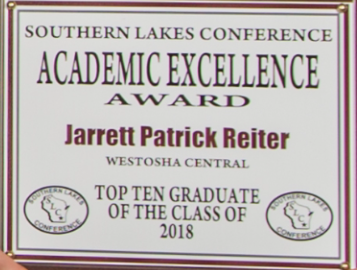

University of Wisconsin-Madison
GPA: 3.97/4.00
B.S. Economics Candidate
Expected Graduation May 2023
University of Wisconsin-Madison
GPA: 3.97/4.00
B.S. Economics Candidate
Expected Graduation May 2023
Westosha Central High School
GPA: 4.00/4.00
Graduation 2018

Warehouse Associate - Uline
Parks Maintenance - Kenosha County Parks Division
Veterinary Assistant - Kenosha Animal Hospital